PROJECT 1
GEN ADMISSION STANDING
Artist assets
1-sheets for STRAWBRY, DND
As an Emerging Talent Associate at Warner Music Group, I interned at 10K Projects as an Artist Marketing/Product Management Intern. Over the course of the internship, I got to work across a diverse roster of artists and a variety of projects, including but not limited to: designing artist assets, experiential marketing for album releases, digital content campaigns, and internal initiatives. Explore each of my projects below!
PROJECT 1
GEN ADMISSION STANDING
Artist assets
1-sheets for STRAWBRY, DND
PROJECT 2
GEN ADMISSION STANDING
Blu DeTiger
Social content for Blu DeTiger’s album release
PROJECT 3
GEN ADMISSION STANDING
Digital Content Strategy
YouTube shorts and fan pages
PROJECT 4
GEN ADMISSION STANDING
Internal Initiatives
10K in the A, 10K for 10K
Having a background in graphic/product design, live events, and digital marketing, I came into WMG wanting to combine my skills in one role, and I was able to do just that. Now at a record label, I’ve grown passionate about developing artists, whether it be creating digital marketing strategy or branding them through visual assets. I know I want to work at the intersection of artist development, design, technology, and experiential marketing, and I’m excited to continue developing my dream career.
Whether it was on my subway commute, working at the intern table on the 4th floor, or walking around 7th to get my morning chai, these are the songs I’ve been listening to:
Explore my favorite collaborations and core takeaways
One of my favorite parts about working at 10K Projects was the amount of fluidity I had to work with different departments and artists. Building out the database tool for marketers at 10K, I worked with someone on Warner’s product design team, an intern in the Creative department, as well as 10K marketers themselves to have them test the database as I was building it. It challenged me to go out of my comfort zone and reach out to different departments in the company, but that was what made the project impactful.
My day-to-day responsibilities changed based on the current priorities. I really loved the fast-paced nature of my team, and how there were so many initiatives happening all at once. I had to figure out where I could jump in and contribute to the team. I did that by getting to know what each person’s specific role was, what artists on the roster they oversaw, and what they needed help with. For some, that was designing 1-sheets and making fan page content, and for others, it was sourcing freelance DJ’s for an album release party. I learned to be proactive, learn the intricacies of the team, and be vocal about what I wanted to learn and contribute.
To future Emerging Talent Associates in 2046, my advice is to explore different fields that you’re interested in, and don’t box yourself into one category. Whether your interests are in marketing, A&R, design, commerce, or another field, being an intern is the perfect opportunity to talk to people who are doing those roles, and carve out your own path for yourself.
I’m super grateful to the 10K Projects and Warner Music Group team for having me as an ETA this semester. I’ve grown so much in a short amount of time and will bring everything I’ve learned here into my next chapter.
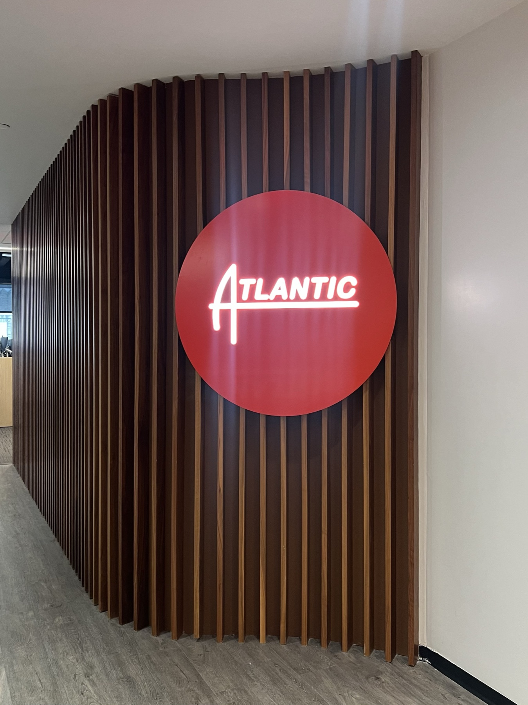
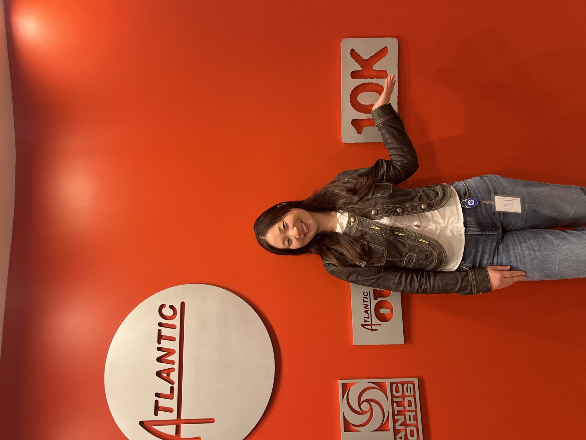
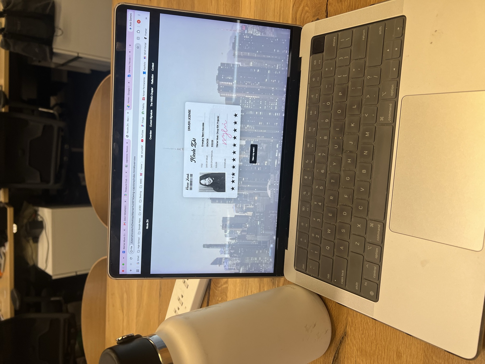
PROJECT 1
redesigned 1-sheets for STRAWBRY, DND
I helped redesign updated 1-sheets for a few artists on our roster — turning streaming stats, top tracks, and genre positioning into a clean, scannable asset for bookings, press, and more.
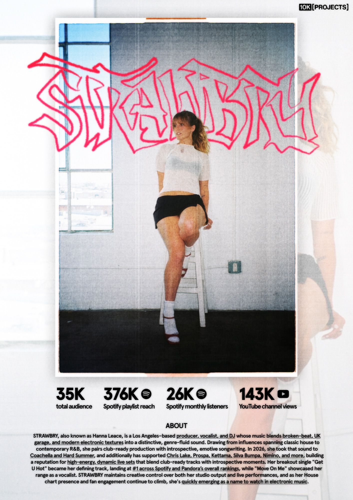
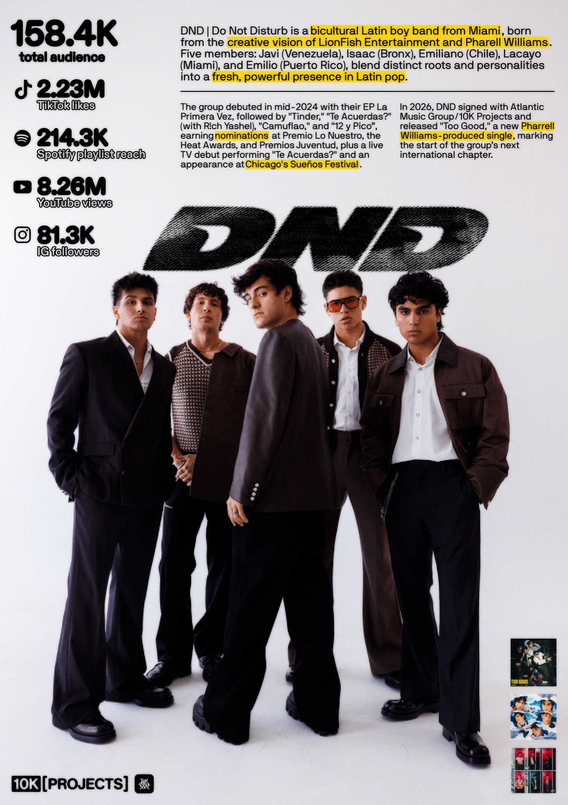
PROJECT 2
Capturing digital content for Blu DeTiger’s NY show
Ahead of her album release (N.Y. Baby), I attended her NYC show to capture social content for TikTok and Instagram, teasing her new singles.
11.2K+ total views
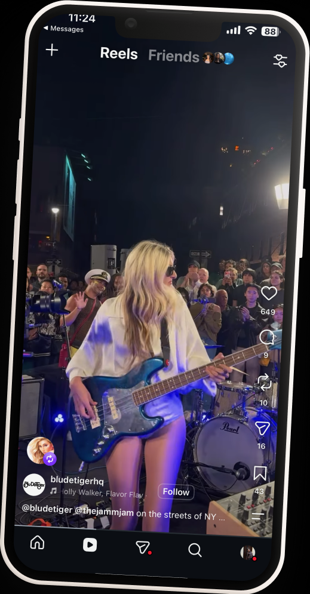
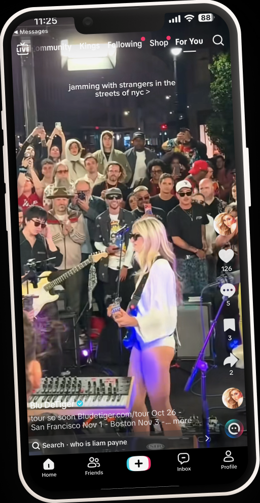
PROJECT 3
YouTube shorts and fan pages
I crossposted our roster’s content weekly to YouTube shorts to boost reach and engagement, including Sasha Alex Sloan, Isabella Contadini, Avara, Girlfriend, Wife, and KOAD. I also worked on a fan page for Girlfriend, Wife, deepening fan connection and community around their music.
YOUTUBE SHORTS
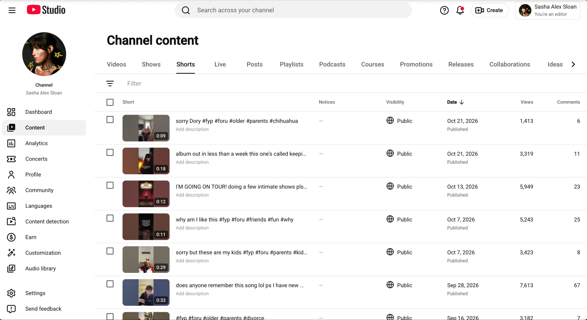
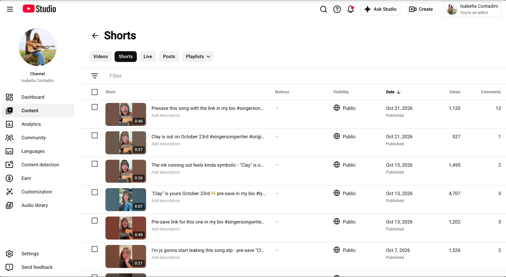
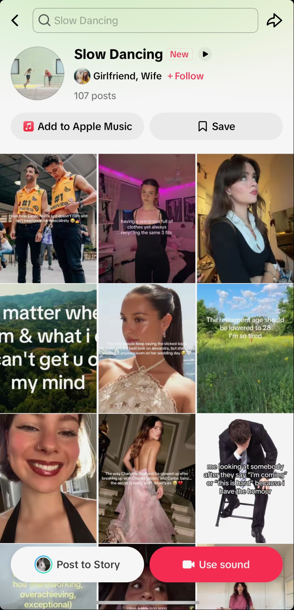
Ran a fan page creating content promoting their newest single, “Slow Dancing”, using trendy audios with replicable formats that encourage fans to make their own videos.
PROJECT 4
10K in the A, 10K for 10K
I got to help out with a few of 10K Projects’ exciting internal initiatives this semester, including 10K in the A, a 3-day songwriting camp in Atlanta, GA for artists on the roster, and 10K for 10K, a race celebrating 10K Projects’ 10-year anniversary.
10K IN THE A INVITATION
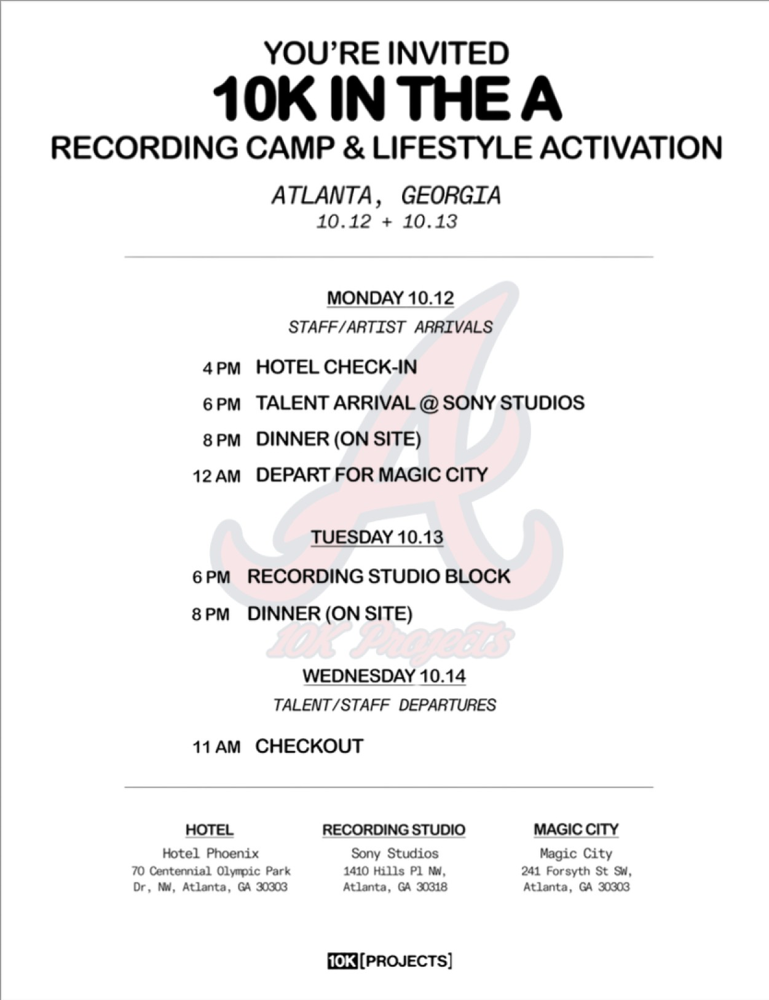
10K FOR 10K MARATHON
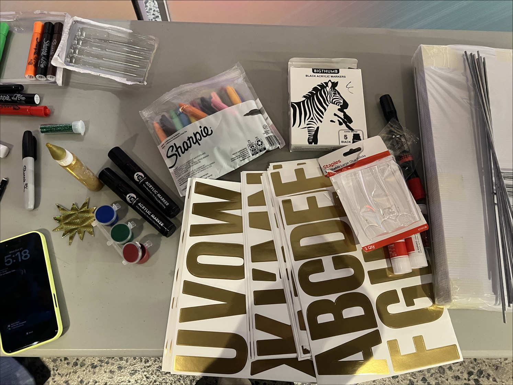
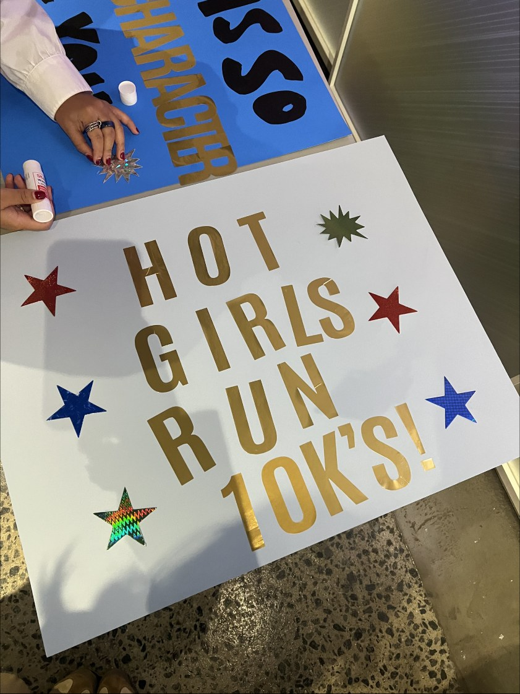